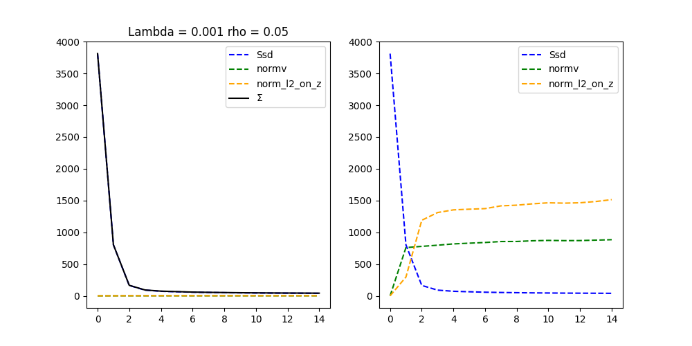
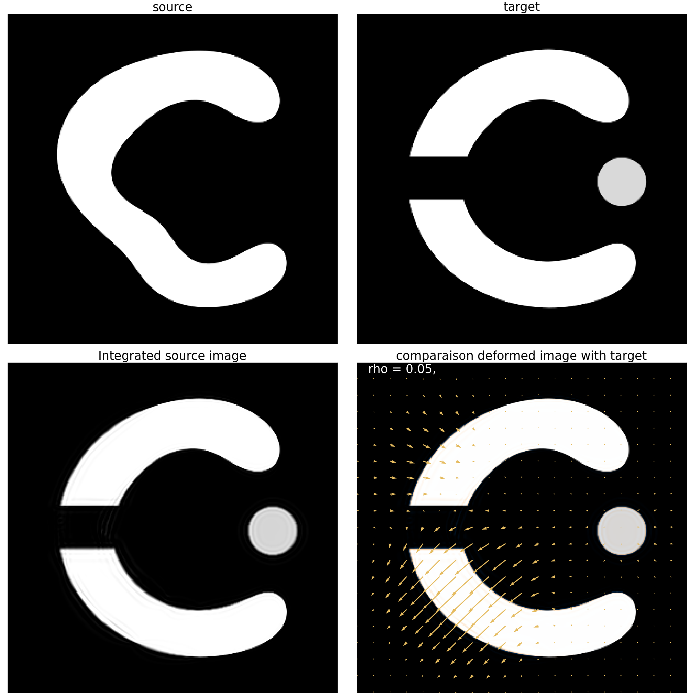
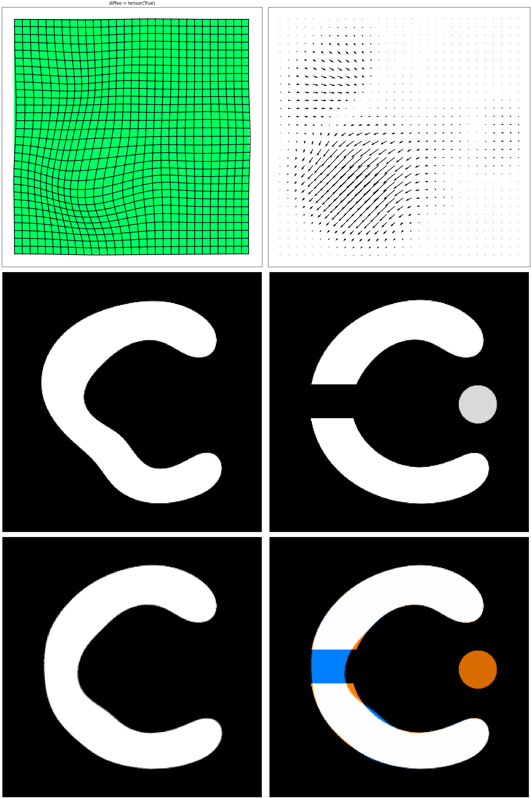
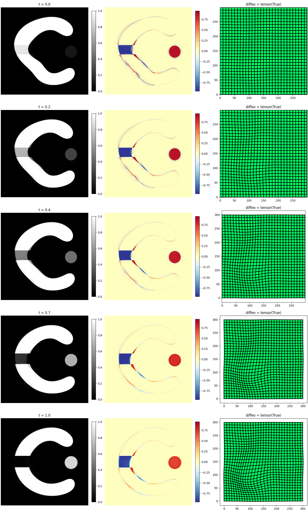

Note
Go to the end to download the full example code.
MetaMorphosis behaviour with different values of rho
This example shows how the MetaMorphosis behaves with different values of rho.
Let \(\rho \in [0,1]\), we define the evolution of the image over time as:
Note: The square roots may seem surprising, but the reason will become clear at the end.
We define the Hamiltonian:
By calculating the optimal trajectories we obtain the system:
We notice that we can rewrite:
This means that the optimal dynamics is the weighted average between the creation of the field and the photometric addition controlled by the momentum \(p\).
Import the necessary packages
try:
import sys, os
# add the parent directory to the path
base_path = os.path.join(os.path.dirname(os.path.abspath(__file__)),'..')
sys.path.insert(0,base_path)
import __init__
except NameError:
pass
import torch
import matplotlib.pyplot as plt
from demeter import *
import demeter.utils.reproducing_kernels as rk
import demeter.metamorphosis as mt
import demeter.utils.torchbox as tb
location = os.getcwd()
if 'runner' in location:
location = os.path.dirname(os.path.dirname(location))
EXPL_SAVE_FOLDER = os.path.join(location,"saved_optim/")
Open and visualise images before registration. The source and target are ‘C’ shapes. The source is a ‘C’ shape that is deformed. The target is a ‘C’ shape that was cut in half changing its topology and a point was added. The goal is to register the source to the target by deforming the ‘C’ shape and accounting the cut and the point as intensity additions.
print("ROOT_DIRECTORY : ",ROOT_DIRECTORY)
source_name,target_name = 'm0t', 'm1c'
# other suggestion of images to try
# source_name,target_name = '17','20' # easy, only deformation
# source_name,target_name = '08','m1c' # hard, big deformation !
size = (300,300)
S = tb.reg_open(source_name,size = size)
T = tb.reg_open(target_name,size = size)
fig, ax = plt.subplots(1,3,figsize=(10,5))
ax[0].imshow(S[0,0],**DLT_KW_IMAGE)
ax[0].set_title('source')
ax[1].imshow(T[0,0],**DLT_KW_IMAGE)
ax[1].set_title('target')
ax[2].imshow(tb.imCmp(S,T,'seg'),origin='lower')
ax[2].set_title('superposition of S and T')
plt.show()
ROOT_DIRECTORY : /home/runner/work/Demeter_metamorphosis/Demeter_metamorphosis
Before choosing the optimisation method, we need to define a reproducing kernel and choose a good sigma. The simpler reproducing kernel is the Gaussian kernel. To choose the sigma, we can use the helper functions. get_sigma_from_img_ratio and plot_kernel_on_image. The first one will compute a good sigma to match the level of details desired. A big sigma will produce a smoother deformation field that will register better big structures. A smaller sigma will register better small details. The subdivisions is basically in how many parts we want to divide the image to get the size of wanted details. The second function will plot the kernel on the image to help us validate our choice of sigma.
image_subdivisions = 10
sigma = rk.get_sigma_from_img_ratio(T.shape,subdiv = image_subdivisions)
kernelOperator = rk.GaussianRKHS(sigma,kernel_reach=4)
rk.plot_kernel_on_image(kernelOperator,image= T,subdiv=image_subdivisions)
plt.show()
kernel shape: torch.Size([1, 257, 257])
kernel shape: 257 257
/opt/hostedtoolcache/Python/3.12.9/x64/lib/python3.12/site-packages/torch/functional.py:513: UserWarning: torch.meshgrid: in an upcoming release, it will be required to pass the indexing argument. (Triggered internally at ../aten/src/ATen/native/TensorShape.cpp:3609.)
return _VF.meshgrid(tensors, **kwargs) # type: ignore[attr-defined]
x, y torch.Size([257, 257]) torch.Size([257, 257])
Perform a first Metamorphosis registration
if torch.cuda.is_available():
device = 'cuda:0'
else:
device = 'cpu'
S = S.to(device)
T = T.to(device)
dx_convention = 'square'
# dx_convention = 'pixel'
rho = 0.05
#
# data_cost = mt.Ssd_normalized(T)
data_cost = mt.Ssd(T)
mr = mt.metamorphosis(S,T,0,
rho,
cost_cst=.001, # If the end result is far from the target, try decreasing the cost constant (reduce regularisation)
kernelOperator=kernelOperator,
integration_steps=10, # If the deformation is big or complex, try increasing the number of integration steps
n_iter=15, # If the optimisation did not converge, try increasing the number of iterations
grad_coef=1, # if the optimisation diverged, try decreasing the gradient coefficient
dx_convention=dx_convention,
data_term=data_cost,
hamiltonian_integration=True # Set to true if you want to have control over the intermediate steps of the optimisation
)
# mr.save(f'round_to_mot_rho{rho}',light_save = True)
Progress: [#---------] 13.33% (Ssd : ,802.5087).
Progress: [##--------] 20.00% (Ssd : ,163.6530).
Progress: [###-------] 26.67% (Ssd : , 89.7214).
Progress: [###-------] 33.33% (Ssd : , 71.7436).
Progress: [####------] 40.00% (Ssd : , 64.0281).
Progress: [#####-----] 46.67% (Ssd : , 56.8949).
Progress: [#####-----] 53.33% (Ssd : , 52.6968).
Progress: [######----] 60.00% (Ssd : , 49.6450).
Progress: [#######---] 66.67% (Ssd : , 46.6622).
Progress: [#######---] 73.33% (Ssd : , 44.5396).
Progress: [########--] 80.00% (Ssd : , 42.8393).
Progress: [#########-] 86.67% (Ssd : , 41.6330).
Progress: [#########-] 93.33% (Ssd : , 40.6257).
Progress: [##########] 100.00% Done...
(Ssd : , 39.3657).
Computation of forward done in 0:01:53s and 0.886cents s
Computation of metamorphosis done in 0:01:53s and 0.887cents s
_, fig_ax = mr.plot()
fig_cmp = fig_ax[0]
fig_def = mr.plot_deform()
mr.mp.plot()
- 
- 
- 
- 
Clipping input data to the valid range for imshow with RGB data ([0..1] for floats or [0..255] for integers). Got range [-0.24801728129386902..1.3701016902923584].
(<Figure size 1500x2500 with 25 Axes>, array([[<Axes: title={'center': 't = 0.0'}>, <Axes: >,
<Axes: title={'center': 'diffeo = tensor(True)'}>],
[<Axes: title={'center': 't = 0.2'}>, <Axes: >,
<Axes: title={'center': 'diffeo = tensor(True)'}>],
[<Axes: title={'center': 't = 0.4'}>, <Axes: >,
<Axes: title={'center': 'diffeo = tensor(True)'}>],
[<Axes: title={'center': 't = 0.7'}>, <Axes: >,
<Axes: title={'center': 'diffeo = tensor(True)'}>],
[<Axes: title={'center': 't = 1.0'}>, <Axes: >,
<Axes: title={'center': 'diffeo = tensor(True)'}>]], dtype=object))
optimisation for the values of rho in the files listed in list_optim. Feel free to try yourselves If you want to recompute them by setting recompute to True. The number of rho to test is set by n_plot.
list_optim = [
"2D_23_01_2025_simpleToyExample_rho_0.00_000.pk1",
"2D_23_01_2025_simpleToyExample_rho_0.11_000.pk1",
"2D_23_01_2025_simpleToyExample_rho_0.22_000.pk1",
"2D_23_01_2025_simpleToyExample_rho_0.33_000.pk1",
"2D_23_01_2025_simpleToyExample_rho_0.44_000.pk1",
"2D_23_01_2025_simpleToyExample_rho_0.56_000.pk1",
"2D_23_01_2025_simpleToyExample_rho_0.67_000.pk1",
"2D_23_01_2025_simpleToyExample_rho_0.78_000.pk1",
"2D_23_01_2025_simpleToyExample_rho_0.89_000.pk1",
"2D_23_01_2025_simpleToyExample_rho_1.00_000.pk1",
]
recompute = False
n_plot = 10
rho_list = torch.linspace(0,1,n_plot)
fig,ax = plt.subplots(2,n_plot,figsize=(20,5))
for i,rho in enumerate(rho_list):
print(f'\nrho = {rho}, {i+1}/{n_plot}')
if recompute:
mr = mt.metamorphosis(S,T,0,
rho,
cost_cst=.001,
kernelOperator=kernelOperator,
integration_steps=10,
n_iter=30,
grad_coef=.1,
dx_convention=dx_convention,
data_term=data_cost,
hamiltonian_integration=True
)
mr.save(f'simpleToyExample_rho_{rho:.2f}',light_save = True)
else:
mr = mt.load_optimize_geodesicShooting(list_optim[i],path =EXPL_SAVE_FOLDER)
# mr.plot_cost()
ax[0,i].set_title(f'rho = {rho:.2f}')
ax[0,i].imshow(mr.mp.image[0,0].detach().cpu(),**DLT_KW_IMAGE)
deform = mr.mp.get_deformator()
img_deform = tb.imgDeform(S.cpu(),deform,dx_convention=dx_convention)
ax[1,i].imshow(img_deform[0,0].detach().cpu(),**DLT_KW_IMAGE)
plt.show()
# sphinx_gallery_thumbnail_number = 4
rho = 0.0, 1/10
DT: None
New optimiser loaded (2D_23_01_2025_simpleToyExample_rho_0.00_000.pk1) :
Metamorphosis_Shooting(cost_parameters : {,
rho =0.0,
lambda =0.001
},
geodesic integrator : Metamorphosis_integrator(
(kernelOperator): GaussianRKHS,2D
filter :fft_filter, sigma :(32.189490394340204, 32.189490394340204)
kernel_size :(1, 225, 225)
kernel_reach :7
normalized :True
)
integration method : _step_full_semiLagrangian
optimisation method : LBFGS_torch
# geodesic steps =10
)
rho = 0.1111111119389534, 2/10
DT: None
New optimiser loaded (2D_23_01_2025_simpleToyExample_rho_0.11_000.pk1) :
Metamorphosis_Shooting(cost_parameters : {,
rho =0.1111111119389534,
lambda =0.001
},
geodesic integrator : Metamorphosis_integrator(
(kernelOperator): GaussianRKHS,2D
filter :fft_filter, sigma :(32.189490394340204, 32.189490394340204)
kernel_size :(1, 225, 225)
kernel_reach :7
normalized :True
)
integration method : _step_full_semiLagrangian
optimisation method : LBFGS_torch
# geodesic steps =10
)
rho = 0.2222222238779068, 3/10
DT: None
New optimiser loaded (2D_23_01_2025_simpleToyExample_rho_0.22_000.pk1) :
Metamorphosis_Shooting(cost_parameters : {,
rho =0.2222222238779068,
lambda =0.001
},
geodesic integrator : Metamorphosis_integrator(
(kernelOperator): GaussianRKHS,2D
filter :fft_filter, sigma :(32.189490394340204, 32.189490394340204)
kernel_size :(1, 225, 225)
kernel_reach :7
normalized :True
)
integration method : _step_full_semiLagrangian
optimisation method : LBFGS_torch
# geodesic steps =10
)
rho = 0.3333333432674408, 4/10
DT: None
New optimiser loaded (2D_23_01_2025_simpleToyExample_rho_0.33_000.pk1) :
Metamorphosis_Shooting(cost_parameters : {,
rho =0.3333333432674408,
lambda =0.001
},
geodesic integrator : Metamorphosis_integrator(
(kernelOperator): GaussianRKHS,2D
filter :fft_filter, sigma :(32.189490394340204, 32.189490394340204)
kernel_size :(1, 225, 225)
kernel_reach :7
normalized :True
)
integration method : _step_full_semiLagrangian
optimisation method : LBFGS_torch
# geodesic steps =10
)
rho = 0.4444444477558136, 5/10
DT: None
New optimiser loaded (2D_23_01_2025_simpleToyExample_rho_0.44_000.pk1) :
Metamorphosis_Shooting(cost_parameters : {,
rho =0.4444444477558136,
lambda =0.001
},
geodesic integrator : Metamorphosis_integrator(
(kernelOperator): GaussianRKHS,2D
filter :fft_filter, sigma :(32.189490394340204, 32.189490394340204)
kernel_size :(1, 225, 225)
kernel_reach :7
normalized :True
)
integration method : _step_full_semiLagrangian
optimisation method : LBFGS_torch
# geodesic steps =10
)
rho = 0.5555555820465088, 6/10
DT: None
New optimiser loaded (2D_23_01_2025_simpleToyExample_rho_0.56_000.pk1) :
Metamorphosis_Shooting(cost_parameters : {,
rho =0.5555555820465088,
lambda =0.001
},
geodesic integrator : Metamorphosis_integrator(
(kernelOperator): GaussianRKHS,2D
filter :fft_filter, sigma :(32.189490394340204, 32.189490394340204)
kernel_size :(1, 225, 225)
kernel_reach :7
normalized :True
)
integration method : _step_full_semiLagrangian
optimisation method : LBFGS_torch
# geodesic steps =10
)
rho = 0.6666666865348816, 7/10
DT: None
New optimiser loaded (2D_23_01_2025_simpleToyExample_rho_0.67_000.pk1) :
Metamorphosis_Shooting(cost_parameters : {,
rho =0.6666666865348816,
lambda =0.001
},
geodesic integrator : Metamorphosis_integrator(
(kernelOperator): GaussianRKHS,2D
filter :fft_filter, sigma :(32.189490394340204, 32.189490394340204)
kernel_size :(1, 225, 225)
kernel_reach :7
normalized :True
)
integration method : _step_full_semiLagrangian
optimisation method : LBFGS_torch
# geodesic steps =10
)
rho = 0.7777777910232544, 8/10
DT: None
New optimiser loaded (2D_23_01_2025_simpleToyExample_rho_0.78_000.pk1) :
Metamorphosis_Shooting(cost_parameters : {,
rho =0.7777777910232544,
lambda =0.001
},
geodesic integrator : Metamorphosis_integrator(
(kernelOperator): GaussianRKHS,2D
filter :fft_filter, sigma :(32.189490394340204, 32.189490394340204)
kernel_size :(1, 225, 225)
kernel_reach :7
normalized :True
)
integration method : _step_full_semiLagrangian
optimisation method : LBFGS_torch
# geodesic steps =10
)
rho = 0.8888888955116272, 9/10
DT: None
New optimiser loaded (2D_23_01_2025_simpleToyExample_rho_0.89_000.pk1) :
Metamorphosis_Shooting(cost_parameters : {,
rho =0.8888888955116272,
lambda =0.001
},
geodesic integrator : Metamorphosis_integrator(
(kernelOperator): GaussianRKHS,2D
filter :fft_filter, sigma :(32.189490394340204, 32.189490394340204)
kernel_size :(1, 225, 225)
kernel_reach :7
normalized :True
)
integration method : _step_full_semiLagrangian
optimisation method : LBFGS_torch
# geodesic steps =10
)
rho = 1.0, 10/10
DT: None
New optimiser loaded (2D_23_01_2025_simpleToyExample_rho_1.00_000.pk1) :
Metamorphosis_Shooting(cost_parameters : {,
rho =1.0,
lambda =0.001
},
geodesic integrator : Metamorphosis_integrator(
(kernelOperator): GaussianRKHS,2D
filter :fft_filter, sigma :(32.189490394340204, 32.189490394340204)
kernel_size :(1, 225, 225)
kernel_reach :7
normalized :True
)
integration method : _step_full_semiLagrangian
optimisation method : LBFGS_torch
# geodesic steps =10
)
Total running time of the script: (1 minutes 58.784 seconds)